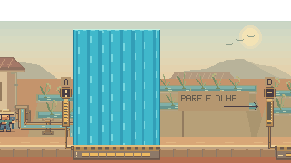

Água com direção e continuidade.
Canos com encaixes completos, correntes que atravessam as curvas, jatos com filetes mais orgânicos e espuma ligada ao ponto de queda. Uma nova rodada de acabamento da rede hidráulica de Guaíra.
Respiros · Pressão com movimento contínuo

Filetes curvos e reflexos desencontrados substituem as faixas verticais rígidas. A textura sobe a partir da grelha; a espuma continua marcando a altura exata da água perigosa.
Estudo do renderizador: antes à esquerda, depois à direita, com a mesma câmera e o mesmo relógio. Os mecanismos foram posicionados para inspecionar a arte; o personagem não participa deste estudo. Vídeo a 30 fps, sem áudio.

O que mudou
Metal e conexões
Luvas, juntas escuras, rebordos e pequenos ressaltos completam as pontas dos canos. A passagem visível da água fica aberta em toda a conexão, inclusive nos segmentos curtos.
Fluxo mais fluido
Os reflexos avançam em passos menores de tempo. A mesma corrente segue por toda a tubulação; a direção se conserva nas curvas, nas subidas e nos retornos.
Queda, espuma e profundidade
Filetes mais longos acompanham a queda. Ondas se sobrepõem ao atingir a bacia, perdem contraste ao se afastar e dão lugar a reflexos discretos sob a superfície.
Pressão e desligamento
O desenho acompanha a altura real do jato. Ao fechar um registro, o resíduo claro acelera em direção à grelha e desaparece. A pausa congela a animação; movimento reduzido preserva a informação sobre o perigo.
Dentro do jogo
Trechos de partidas completas, realizadas com os comandos normais. Aqui, personagem, mecanismos e câmera seguem a simulação do jogo.
Física a 60 Hz e captura a 30 fps, sem áudio. Os clipes mostram os quadros 450 a 1350 das partidas; todas as oito execuções chegaram ao final.
Conferir a integração nas oito cenas
As oito partidas mantiveram os 183 estados amostrados de posição e câmera, duração e moedas da referência. A inspeção gerou 386 vistas ao longo dos percursos, incluindo os interiores e as duas arenas.


Verificação
3.755 testes TypeScript aprovados, zero falhas e um caso opcional ignorado; três testes JavaScript, validadores e build aprovados. Oito novos casos verificam a cadência, o fluxo pelas conexões, a textura presa à grelha e a queda dos resíduos. A campanha normal concluiu nove execuções, cobrindo as oito cenas.
Decisões e reprodução · Resultados consolidados · Revisão anterior: fundos das oito cenas